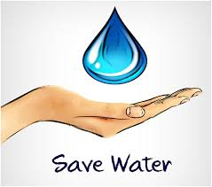
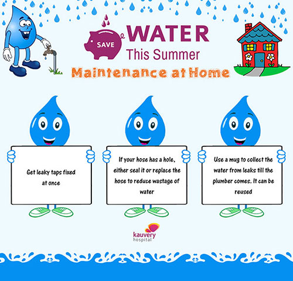
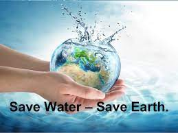
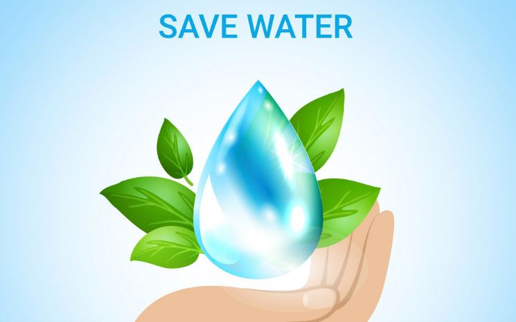

Life Without Water is Impossible.
Save Water-Save Life
How Is Water Being Wasted
Water is a vital component for all known forms of life to be able to survive. Water covers about 71% of earth surface, and is a valuable resource of the earth. Water is a valuable natural resource with many uses; it’s needed for direct consumption, agricultural irrigation, aquatic life, recreation uses, fisheries, and the disposal and treatment of sewage, and industrial waste. (Graz, 1998) Distribution systems are responsible for moving water from a source, such as water treatment plants, to consumers to utilize it. Water distributions systems are crucial to supplying safe water; demands for water are growing due to increased consumption, increased demands, and fewer resources.
The world’s water source exists naturally in many different forms and is located in the “air, on the surface, below the ground, and in the oceans” (Shiklomanov, 1989). Freshwater accounts for only 2.5% of the Earth’s water, with a large portion frozen in glaciers. The remaining freshwater is found as groundwater, which is being used to supply drinking water and support farming, and agriculture in dry locations.. The resource is considered renewable as long as groundwater is not withdrawn faster than nature can replenish it, but in many dry regions the groundwater does not renew itself or only very slowly.There is earth is composed of approximately 30 percent of the world’s fresh water is in liquid form and therefore potentially accessible for human use such as drinking to prepare food, washing clothes, and necessary functions which water is a major component.
Water Distribution systems are a very important component in ensuring safe drinking water. According to the Environmental Protection Agency (EPA), (2011) “Water distribution systems are large networks of storage tanks, valves, pumps, and pipes that transport finished water to consumers (Para 2) . About 96% of all liquid freshwater can be found underground. The remaining small fraction is on the surface or in the air. The Hydrologic cycle (water cycle) is a mechanism in which water moves from the air to the earth in the form of precipitation, then back down to the atmosphere as evaporation. By predicting the water cycle thought earth it allows scientist to predict how much water is present in various parts of the earth. (Dingman, 1994)
Water distributed and intended for human consumptions should be safe to consume, free from pathogenic agents, and harmful chemical substances, (Park 1997). Without ample safe drinking water, communities cannot live healthy, as water is a vital component to basic human survival. Water resources face a host of serious threats, such as pollution, climate change, run off from farming, and exposure to pesticides, which can cause chronic health problems in humans.
Save Water
Save water is the water conservation through various means on the earth in order to balance life here.
By estimating the very less percentage of safe and drinking water on the earth, water conservation or save water campaign has been compulsory for every one of us. Large water bodies are getting polluted on daily basis by the industrial waste materials. Proper water management systems should be promoted by the builders in all industrial buildings, apartments, school, hospitals, etc to bring more efficiency in the water saving. Awareness programmes should be run to let common people know about the potential problems caused by the drinking or normal water scarcity. There is urgent need to eradicate the people’s attitude about water wastage.
Rainwater harvesting should be initiated by the people at village level. Rain water can be saved by making small or big ponds with proper maintenance. Young students need to be more aware and concentrate on the issues and solutions. Water insecurity and scarcity has affected people’s living in many countries of the developing world. According to the statistics, people’s demand for the water has been six fold in the past century. 40 per cent of the global population is living in the areas of demand outstrips supply. And in the coming decades this situation can be worsened because everything will expand like population, agriculture, industries, etc.
How to Save Water
I have mentioned below some better ways to save water on daily basis:
People should water their lawn and garden only when they need water.
Sprinkling is better on the plants than putting more water with pipe which can save more gallons of water per month.
Planting drought resistant plants is better way to save water.
Leaky faucets and plumbing joints should be fixed properly to save water leakage which may save around 20 gallons of water per day.
Use of bucket and mug is good to wash car instead of using pipe which may save up to 150 gallons of water each time.
Use of flow restrictors to the showers also saves more water.
Use of fully loaded washing machines and dishwashers saves around 300 to 800 gallons per month.
Restricting the use of more water per toilet helps in saving more water per day.
We should wash fruits and vegetables in the water filled pot instead of washing under the running water.
Rain water harvesting is good idea for the purposes like use in toilet, watering garden, etc so that clean water can be saved for drinking and cooking purposes.